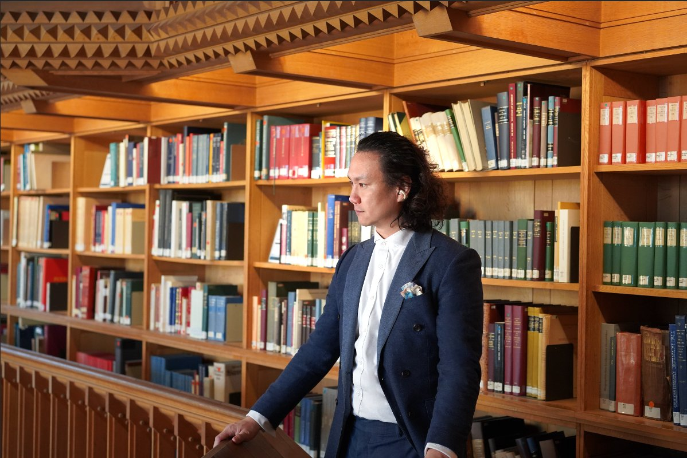

Un cabinet de conseil luxembourgeois, à l'intersection de l'éducation, de l'établissement et de la stratégie familiale de long terme.
SBMG a été fondé pour répondre à un manque spécifique — l'absence d'un cabinet de conseil discret, à posture institutionnelle, capable d'accompagner les familles internationalement mobiles sur les décisions structurelles qui s'amplifient dans le temps.
Une posture institutionnelle, par choix.
Silver Bay Mountain Group opère depuis le Luxembourg, en anglais, français et chinois. Le travail du cabinet s'articule autour de trois lignes de service interconnectées — parcours d'éducation européenne, établissement luxembourgeois, et conseil aux décisions familiales de long terme — soutenu par un dialogue institutionnel régulier avec des écoles, des universités et des partenaires professionnels qualifiés à travers les juridictions européennes.
La posture du cabinet est délibérément mesurée. Nous ne recrutons pas à l'échelle. Nous accompagnons un nombre restreint de familles et d'institutions, dans la durée, dans le respect de limites professionnelles clairement définies.
Un petit pays aux institutions prévisibles.
Le Luxembourg offre quelque chose de spécifique qui ne ressort pas toujours dans les tableaux comparatifs entre pays : un système d'enseignement public trilingue, des perspectives d'installation à long terme dans un cadre européen stable, une stabilité institutionnelle qui survit aux cycles politiques d'ailleurs, et une place financière qui récompense la substance plutôt que la simple présence.
Ces avantages discrets se composent sur quinze ans — pas sur quinze mois. Ils récompensent les familles qui traitent leur présence européenne comme un engagement de long terme.
James Liu
Fondateur et Directeur général
James Liu est le fondateur de Silver Bay Mountain Group, basé au Luxembourg. Son travail porte sur l'éducation européenne, l'établissement familial et les décisions de planification de long terme pour les familles internationales.
Son parcours combine deux décennies d'entrepreneuriat et de conseil transfrontaliers avec des études de gestion de patrimoine à l'Université du Luxembourg, lui permettant de comprendre aussi bien la prise de décision au niveau familial que l'environnement institutionnel en Europe.

Une seule ligne pour l'eau. Cela suffit.
L'emblème de Silver Bay Mountain Group s'inspire du plus ancien principe de la cosmologie chinoise — « Le Ciel engendre l'eau par l'Un » — où une seule ligne suffit à signifier l'eau dans son entièreté. Les trois sommets ci-dessus reprennent l'identité du cabinet ; la ligne unique d'eau en contrebas complète le sens de Silver Bay. L'emblème est volontairement épuré, à l'image de la posture du cabinet dans son travail de conseil.